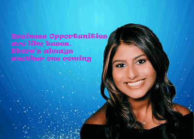

"Hello! My name is Sarah Khan and I am a Junior at Syracuse University majoring in Finance and Minoring in the iSchool. I am pursuing this degree because I would love to work in a corporate setting and I also know that having a background in technology is very vital these days. Additionally, I am hoping to go to Law School in which I am currently studying for my LSATS
I am part of several organizations on campus including club tennis, the pre-law frat and I am also the Vice President of Academic Excellence for my sorority, Kappa Kappa Gamma. I love to play tennis, hang out with friends, listen to music, work out, and read. I really enjoy reading the Wall Street Journal and my favorite show is Silicon Valley (which is another reason why I love minoring in the ischool).
A fun fact about me is that I am double jointed in my shoulder and I have an enormous family. My grandpa is 1 of 13 and my other grandparents have more that 5 siblings, so family events are big and loud. Additionally, I have a younger brother in high school who I am very close to — I am also convincing him to go to Syracuse. I am so excited to learn how to code!"
©2020